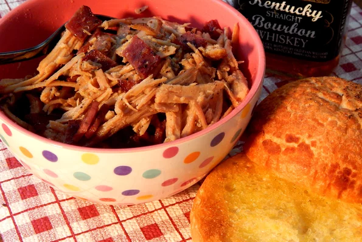

Bourbon Bacon Pulled Pork

Easy, simple slow cooker bourbon bacon pulled pork. Serve with or without buns. If using buns, they taste best toasted. Top the cooked pulled pork with BBQ sauce.
A basic pulled pork recipe.
Ingredients
- 1 teaspoon garlic powder
- 1 teaspoon onion powder
- 1 teaspoon salt
- 1 teaspoon ground black pepper
- 2 pounds pork loin
- 1 cup packed brown sugar
- ½ cup bourbon
- ⅓ cup apple cider vinegar
- 8 slices cooked bacon, crumbled
Steps
- Combine garlic powder, onion powder, salt, and pepper in a small bowl. Massage over all sides of pork loin for 1 minute. Place pork in a slow cooker.
- Mix brown sugar, bourbon, and apple cider vinegar together in a bowl and pour over pork loin. Close slow cooker.
- Cook on Low until pork is tender, 8 to 10 hours. Remove pork from slow cooker and shred with 2 forks. Mix with bacon.